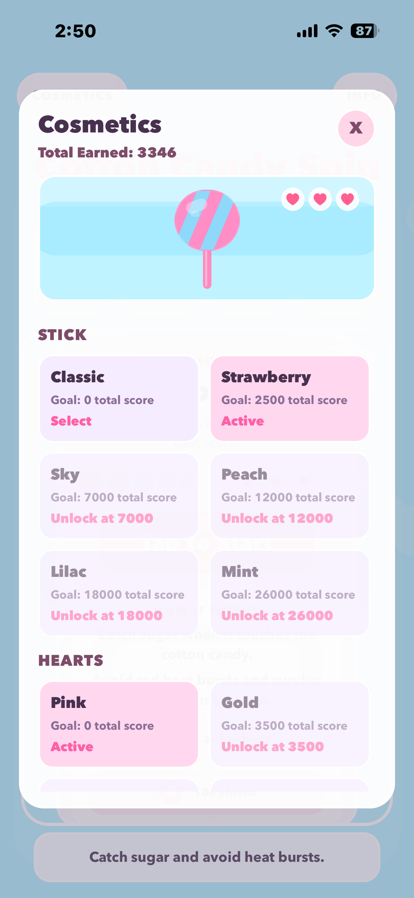
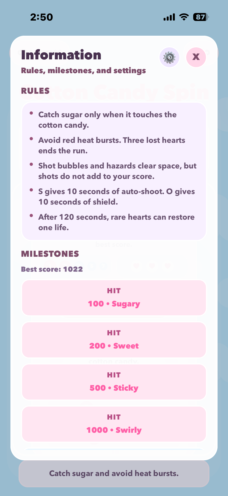
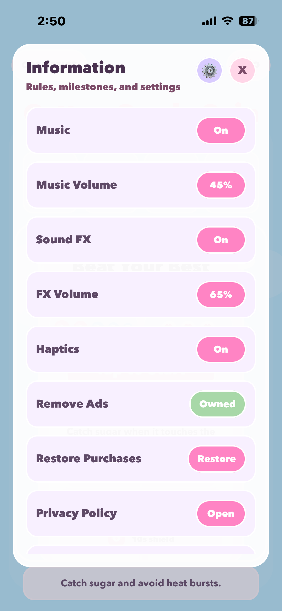

Start Screen / Sweet Survival
The opening overlay explains the loop fast: grab sugar, dodge heat bursts, watch the point bubbles, and start with a single tap instead of a long tutorial.
Cotton Candy Spin is a pastel arcade survival game by Natelly. Players guide a cotton candy stick across the playfield, catch sugar only when it makes contact, dodge red heat bursts, and keep chasing longer runs, higher scores, and new cosmetic unlocks, and it is now available on the App Store.
Cotton Candy Spin turns a simple drag-and-catch idea into a run that feels readable, reactive, and energetic. The rules are easy to understand quickly, but strong runs depend on positioning, survival pressure, and knowing when to lean on short power-ups.
This page explains what kind of game Cotton Candy Spin is, shows current gameplay screens, links to the App Store, and includes the live privacy policy. For support or business questions, contact info@natelly.com.
Cotton Candy Spin keeps the loop approachable while still giving players a few layers to master: contact timing, hazard avoidance, score milestones, and long-term cosmetic progression.
Sugar only scores when it touches the cotton candy, so positioning matters more than frantic swiping.
Red heat bursts cost hearts, three hits end the run, and rare heart pickups can restore one life in longer sessions.
The S pickup grants 10 seconds of auto-shoot and O grants 10 seconds of shield, helping players stabilize a crowded run.
Total earned score unlocks new sticks, candy colorways, backgrounds, and heart styles, giving repeat runs visible payoff.
These screens show the game's onboarding, replay loop, cosmetic progression, rules, milestones, and settings: everything a player sees between runs.
The opening overlay explains the loop fast: grab sugar, dodge heat bursts, watch the point bubbles, and start with a single tap instead of a long tutorial.
The game over view turns each loss into momentum by showing the score gap, next milestone target, share action, and a quick path straight back into another run.

The cosmetics panel lets players browse and equip sticks and heart styles unlocked by total earned score, turning repeat runs into visible collection progress.

The information screen lists core rules, power-up details, and named score milestones so players always know what to aim for next.

Players control music, sound effects, haptics, and volume levels, plus manage purchases, ad removal, and access the privacy policy from one panel.